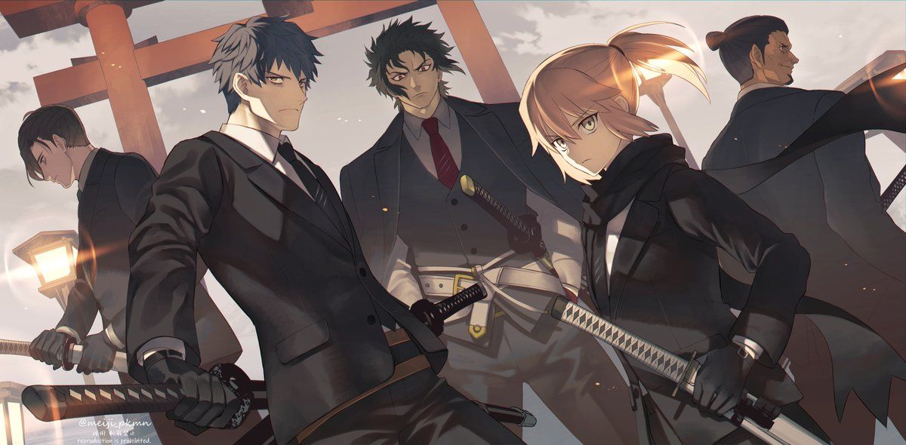
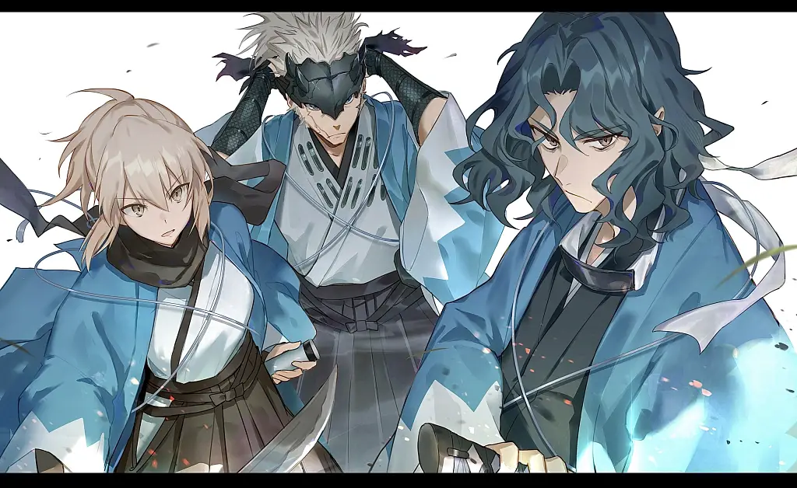

El ShinsengumiWP (新選組WP, lit. "El nuevo Escuadrón"?) era una fuerza policial especial en Kyoto que estuvo activo durante el BakumatsuWP período de Japón. Como Siervos, todos los oficiales al mando del Shinsengumi tienen el Fantasma noble Bandera de la sinceridad, permitiéndoles convocar temporalmente a los demás miembros. Aquellos que tienen malas relaciones con los demás pueden provocar que no todos los miembros respondan.[1] Aunque sólo duraron unos pocos años, el uniforme haori azul del Shinsengumi es tan famoso que cualquiera que sea convocado como Siervos será inmediatamente reconocido como un Shinsengumi con sólo usarlo.
Kondo Isami se había unido a un grupo conocido como el Rōshigumi (浪士組, El escuadrón Ronin?) en 1862 para ser guardaespaldas del shogun, pero en 1863 el grupo fue reformado como fuerza policial Shinsengumi por Kondo y Hijikata Toshizou. Muchos de los miembros de Rōshigumi se convirtieron en miembros fundadores del Shinsengumi, como Okita Souji.[1] Más tarde ese año, varios Shinsengumi, incluidos Okita y Yamanami Keisuke asesinó al co-comandante de Kondo Serizawa Kamo por su pobre liderazgo.[3] El ataque fue liderado por Hijikata.[4]Con la muerte de Serizawa, el poder se consolidó bajo Kondo. En 1865 Yamanami Keisuke, Comandante General y uno de los miembros fundadores, desertó del Shinsengumi por razones aún desconocidas para los historiadores actuales. Okita lo trajo de regreso y voluntariamente enfrentó el castigo por deserción: seppuku.[5] En 1868 cuando el Guerra BoshinWP estalló, los Shinsengumi se reorganizaron en el Kōyō Chinbutai (甲陽鎮撫隊, Cuerpo de Pacificación?) luchar.[3] Las fuerzas Tokugawa, incluido el Shinsengumi, perdieron en el Batalla de Toba-FushimiWP. Después de que Kondo Isami fuera capturado por el nuevo gobierno de Japón y ejecutado, Okita Souji murió de su enfermedad mientras estaba postrada en cama Saitou Hajime se quedó atrás en AizuWP,[5] y el Shinsengumi efectivamente llegó a su fin. Sólo el vicecomandante Hijikata Toshizou continuó hacia el norte mientras portaba la bandera del Shinsengumi y luchaba contra los ejércitos del nuevo gobierno hasta que llegó HakodateWP en 1869. Hijikata murió de un disparo mientras atacaba al nuevo ejército gubernamental para salvar a los soldados del regimiento, poniendo fin definitivamente al Shinsengumi.[4]
Kondou Isami - Comandante
Serizawa Kamo - Co-comandante
Yamanami Keisuke - Comandante General
Hijikata Toshizou - Vicecomandante
Itou Kashitarou - Asesor militar
Okita Souji - Capitán de la primera unidad
Nagakura Shinpachi - Capitán de la segunda unidad
Saitou Hajime - Capitán de la tercera unidad
Ichimura Tetsunosuke
Toudou Heisuke - Capitán de la octava unidad
Harada Sanosuke - Capitán de la décima unidad
Hattori Takeo